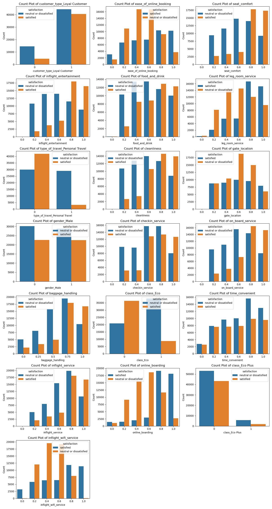

| neutral or dissatisfied | satisfied | accuracy | macro avg | weighted avg | |
|---|---|---|---|---|---|
| 0 | 0.94 | 0.96 | 0.95 | 0.95 | 0.95 |
| 1 | 0.97 | 0.93 | 0.95 | 0.95 | 0.95 |
| 2 | 0.96 | 0.94 | 0.95 | 0.95 | 0.95 |
| 3 | 14622.00 | 11354.00 | 0.95 | 25976.00 | 25976.00 |
Predicting US Airline Passenger Satisfaction: A Data-Driven Approach.
Summary
In this project, we developed a classification model using a decision tree algorithm to predict airline customer satisfaction based on various factors, including in-flight service quality, seat comfort, and demographic information. Customers were categorized as either satisfied (positive ratings) or neutral/dissatisfied (negative ratings). Our decision tree model performed well on an unseen test dataset, demonstrating strong overall accuracy, recall, precision, and F1-score.
These results indicate that the decision tree model effectively detects patterns in customer satisfaction, making it a valuable tool for analyzing key factors that influence satisfaction. However, the higher occurrence of false negatives may lead to an underestimation of satisfied customers, potentially affecting the effectiveness of compensatory measures. Similarly, false positives could result in overlooking instances of dissatisfaction. Despite these limitations, the model provides a reliable foundation for customer satisfaction analysis and can serve as an effective decision-making tool for airlines. Future efforts should focus on improving the model’s sensitivity and specificity, as well as validating its performance across different customer segments, routes, and service scenarios.
Introduction
In the highly competitive field of air transport management, passenger satisfaction plays a critical role in making customer loyalty, providing operational insights, enhancing financial performance, and ensuring compliance with regulations and rankings (Eshaghi et al. (2024)). While there are numerous studies held on factors influencing customer satisfaction like service quality (Namukasa (2013)), it is very important to be able to predict the customer satisfaction with high accuracy for understanding how to improve and make better decisions. In this study, we aim to create a reliable predictive model that will predict US airline passenger satisfaction with high performance.
Methods
Dataset Overview
The dataset contains a wide array of features designed to provide a comprehensive view of the factors affecting passenger satisfaction. This data was sourced from Kaggle and can be found from here. We use Pandas library for storing and manipulating the dataset (McKinney (2010)). These features are grouped into several categories, each contributing valuable information to the overall prediction model:
- Flight Information: This includes key flight-related details such as:
- Flight distance: The distance covered during the flight, which can affect the overall travel experience, particularly in terms of comfort and time spent.
- Departure delay: The delay in the flight’s scheduled departure time, which can negatively impact the passenger’s satisfaction due to inconvenience or missed connections.
- Arrival delay: Similar to departure delay, this refers to the flight’s delay in reaching its destination. Passengers often associate delays with poor service quality, which could lead to dissatisfaction.
- Passenger Demographics: The dataset also captures various demographic details about the passengers:
- Age: Age groups might have varying levels of comfort or expectations when it comes to flight services, influencing their satisfaction ratings.
- Gender: Gender could potentially correlate with differences in travel preferences or service expectations.
- Flight Service Quality: This category focuses on various aspects of the flight experience, including:
- In-flight entertainment: Quality and availability of entertainment options during the flight, which is important for longer journeys or passengers seeking comfort.
- Seat comfort: The comfort level of the seats, an important factor for passenger satisfaction, especially on long flights.
The primary goal of this dataset is to predict passenger satisfaction, which is classified into two categories: satisfied and dissatisfied. The model is trained to analyze the relationships between the provided features and the satisfaction level, with the aim of identifying the key factors that influence a passenger’s likelihood of being satisfied or dissatisfied with their flight experience. This prediction could be used by airlines to improve service quality, address pain points in passenger experience, and optimize overall customer satisfaction.
Data Exploration and Preprocessing
Target Variable Analysis
The target variable, ‘satisfaction’, consists of two categories: ‘neutral or dissatisfied’ and ‘satisfied’. The distribution of this target variable was checked to assess class balance:
Class Distribution: The ‘satisfaction’ column is slightly imbalanced, with 56.5% of the observations labeled as ‘neutral or dissatisfied’ and 43.5% as ‘satisfied’. This is considered a minor imbalance and should not significantly affect model performance.
Data Type and Category Check: The ‘satisfaction’ column was confirmed to be of type
object, indicating that it is categorical. There are only two unique categories in this column, as expected.
Data Splitting
To ensure that the model is evaluated on unseen data, the dataset was randomly split into training and testing subsets:
- Train-Test Split: The data was split into 80% training and 20% testing, yielding 103,904 observations in the training set and 25,976 observations in the test set. The split was done using a random seed to ensure reproducibility.
Exploratory Data Analysis (EDA)
The purpose of this Exploratory Data Analysis (EDA) is to gain a deeper understanding of the Airline Passenger Satisfaction dataset, identify potential issues, and uncover insights that could influence passenger satisfaction. Below is a summarized analysis of key findings from the EDA process.
Distribution of Numerical Variables
Histograms were plotted for all numerical features, revealing that most of the numerical variables, except for age, are right-skewed. This suggests that these features do not follow a normal distribution and may require transformation.
???
Correlation Analysis
A correlation matrix was computed for numerical variables to check for multicollinearity. Notably, departure_delay_in_minutes and arrival_delay_in_minutes were found to be highly correlated, suggesting redundancy. One of these features can be dropped to avoid multicollinearity.
A heatmap visualization of the correlation matrix highlighted these relationships:
Feature-Target Relationships
Numerical Features
Density plots (Figure 1) were generated to examine how numerical features correlate with the target variable satisfaction. These plots indicated that no single feature strongly separated the two classes, suggesting that complex interactions between features may be necessary for predictive modeling.
Ordinal Features
Count plots were used to analyze ordinal features, such as seat_comfort, on_board_service, and inflight_entertainment. These features showed very few observations with values of 0, which must be addressed during preprocessing.

The EDA revealed that the target variable is slightly imbalanced, while many numerical variables are right-skewed and may require transformations. There is high correlation between certain features, suggesting redundancy, and no single feature strongly separates the target variable, indicating the need for more complex models. Missing values were addressed by removing redundant columns, and the dataset is now ready for further preprocessing and modeling.
Preprocessing
A feature was removed due to missing values and high correlation with another feature, making it redundant.
Encoding Categorical Variables
Categorical variables were encoded for machine learning algorithms. One feature was converted into a binary variable, and other categorical variables were one-hot encoded to transform them into numerical format.Scaling Numerical Features
Numerical features were standardized or scaled to ensure they have similar ranges. This helps prevent dominance of variables with larger ranges in machine learning models. Different scaling methods were applied based on the type of data:- One-hot encoding for categorical variables.
- Min-Max scaling for ordinal variables.
- Standard scaling for numerical variables.
Column Transformer Setup
AColumnTransformerwas used to apply appropriate transformations to each feature type, ensuring the data is ready for machine learning models. Categorical variables were one-hot encoded, ordinal variables were min-max scaled, and numerical variables were standardized.
This preprocessing pipeline ensures the dataset is properly prepared for analysis and modeling, with consistent scaling and encoding applied across the features.
Analysis
The analysis of the data began with a thorough exploration to identify patterns and correlations that could inform model development. Key features influencing passenger satisfaction were identified, such as departure_delay_in_minutes, inflight_entertainment_rating, and seat_comfort_rating. High correlation between arrival_delay_in_minutes and departure_delay_in_minutes was observed, leading to the exclusion of the less significant feature to avoid multicollinearity.
For model building, a decision tree classifier was selected for its interpretability and ability to handle both categorical and numerical data (Pedregosa et al. (2011)). A grid search with 5-fold cross-validation was employed to optimize hyperparameters, specifically focusing on the max_depth to balance model complexity and performance.
Post-model training, performance metrics, including accuracy and F1-score, were analyzed to assess the model’s effectiveness. The confusion matrix provided insights into classification errors, revealing a significant number of false negatives, indicating the model’s limitation in predicting dissatisfied passengers. This finding prompted further evaluation of potential model enhancements, such as ensemble methods, to improve classification accuracy.
Through this analysis, it became evident that addressing feature selection and optimizing hyperparameters were critical steps in enhancing the model’s predictive capability for airline passenger satisfaction.
Results and Discussion
The analysis of the confusion matrix, precision-recall curve, and ROC curve provides valuable insights into the performance of our model, which is designed to predict customer satisfaction for US airlines. Overall, the model exhibits high accuracy and strong discriminatory power, yet there are areas for potential refinement.
Classification report
The classification report provided a detailed evaluation of the model’s performance across key metrics, including precision, recall, and F1-score for both satisfied and dissatisfied passenger classes. The model demonstrated higher precision for predicting satisfied passengers, indicating fewer false positives in this class. However, recall for dissatisfied passengers was relatively low, suggesting challenges in correctly identifying dissatisfied passengers. This imbalance highlights areas for improvement, such as refining the dataset or exploring ensemble methods to enhance recall and overall classification performance. We present the classification report in Table 1.
The classification report provided a detailed evaluation of the model’s performance across key metrics, including precision, recall, and F1-score for both neutral or dissatisfied and satisfied passenger classes. The model demonstrated higher precision for predicting satisfied passengers (0.96), indicating fewer false positives in this class. However, recall for neutral or dissatisfied passengers (0.94) was relatively low, suggesting challenges in correctly identifying dissatisfied passengers. This imbalance highlights areas for improvement, such as refining the dataset or exploring ensemble methods to enhance recall and overall classification performance. We present the classification report in Table 1.
Confusion Matrix Analysis
The confusion matrix (Figure 3) reveals that the model performs well in classifying both positive and negative classes. It correctly identifies a significant number of samples as “neutral or dissatisfied” and “satisfied.” Misclassifications are minimal, with only a few instances of “satisfied” samples being incorrectly labeled as “neutral or dissatisfied” and vice versa. This imbalance suggests that the model demonstrates a slightly higher recall for the “neutral or dissatisfied” class compared to the “satisfied” class. While this bias might be acceptable for applications where identifying dissatisfied customers is more critical, it could lead to overlooked cases of satisfied customers in scenarios requiring balanced class representation. Adjustments to the decision threshold or rebalancing the training data may help mitigate this bias, resulting in improved recall for the “satisfied” class.
Precision-Recall and ROC Curves
Precision-Recall Curve
The Precision-Recall curve illustrates the trade-off between precision and recall across different thresholds. In our case, the curve is quite smooth, showing that both precision and recall remain high and stable, indicating that the model’s predictions are reliable and consistent across the classes. This suggests that the model is well-calibrated and effective at distinguishing the “satisfied” class from the “neutral or dissatisfied” class.
ROC Curve
The ROC curve, which represents the trade-off between the true positive rate and false positive rate, complements the Precision-Recall curve by showing the model’s ability to discriminate between the positive and negative classes at various thresholds. A model with a higher area under the curve (AUC) suggests better classification performance. In this case, the model’s ROC curve indicates excellent performance, as it demonstrates a clear ability to distinguish between the “satisfied” and “neutral or dissatisfied” classes.
Model Performance on Test Data
You can see the detailed results in the table below Table 2.
| Accuracy | Recall | Precision | F1-Score | |
|---|---|---|---|---|
| 0 | 0.95 | 0.93 | 0.96 | 0.94 |
The model achieved strong performance on the test dataset, with an accuracy of 0.95. It demonstrated high precision (0.96) in predicting “satisfied” passengers, meaning most of its positive predictions were correct. The recall was 0.93, indicating the model successfully identified most “satisfied” passengers, though there is slight room for improvement. The F1-score of 0.94 reflects a good balance between precision and recall, indicating overall reliable performance.
References
Eshaghi, M. Sadegh, Mona Afshardoost, Gui Lohmann, and Brent D. Moyle. 2024. “Drivers and Outcomes of Airline Passenger Satisfaction: A Meta-Analysis.” Journal of the Air Transport Research Society 3: 100034. https://doi.org/10.1016/j.jatrs.2024.100034.
McKinney, Wes. 2010. “Data Structures for Statistical Computing in Python.” In Proceedings of the 9th Python in Science Conference, edited by Stéfan van der Walt and Jarrod Millman, 51–56.
Namukasa, J. 2013. “The Influence of Airline Service Quality on Passenger Satisfaction and Loyalty: The Case of Uganda Airline Industry.” The TQM Journal 25 (5): 520–32. https://doi.org/10.1108/TQM-11-2012-0092.
Pedregosa, F., G. Varoquaux, A. Gramfort, V. Michel, B. Thirion, O. Grisel, M. Blondel, et al. 2011. “Scikit-Learn: Machine Learning in Python.” Journal of Machine Learning Research 12: 2825–30.
Citation
BibTeX citation:
@online{muradyan,_azin_piran,_sopuruchi_chisom,_shengjia_yu.2024,
author = {Muradyan, Azin Piran, Sopuruchi Chisom, Shengjia Yu., Hrayr},
title = {Predicting {US} {Airline} {Passenger} {Satisfaction:} {A}
{Data-Driven} {Approach.}},
date = {2024-12-07},
langid = {en}
}
For attribution, please cite this work as:
Muradyan, Azin Piran, Sopuruchi Chisom, Shengjia Yu., Hrayr. 2024.
“Predicting US Airline Passenger Satisfaction: A Data-Driven
Approach.” December 7, 2024.